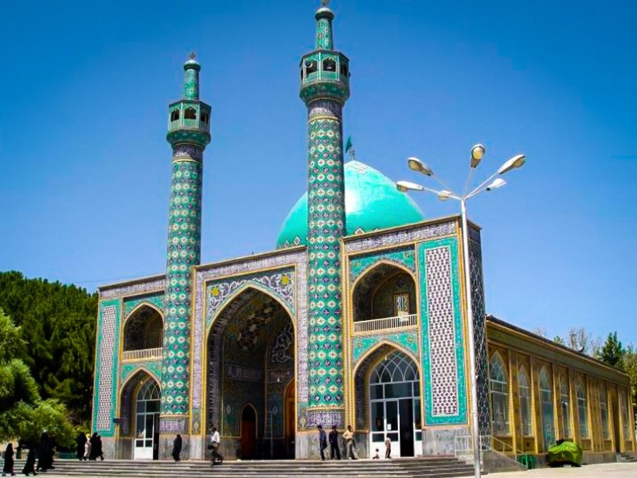
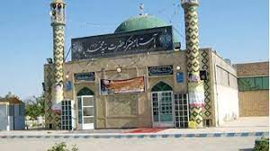
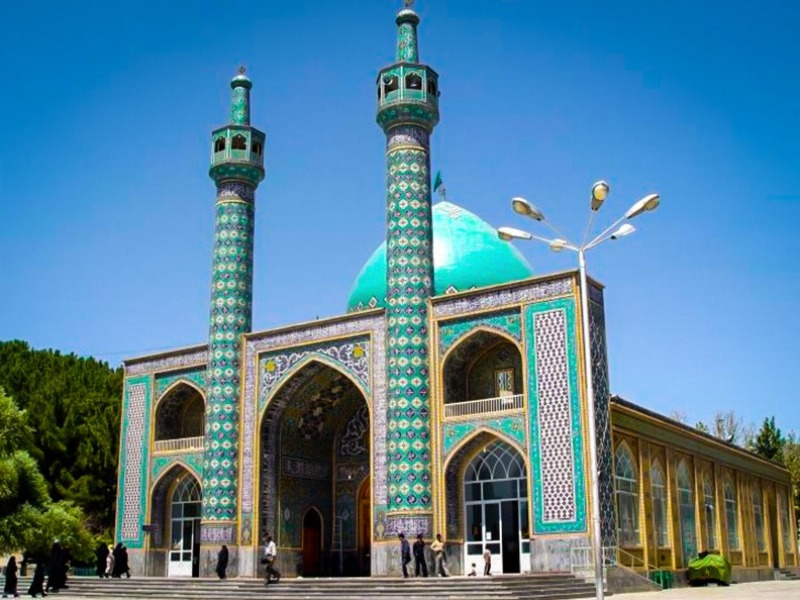
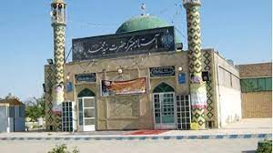
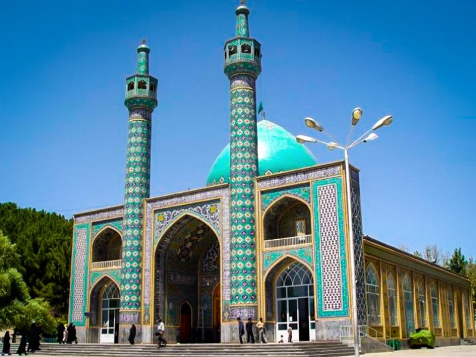
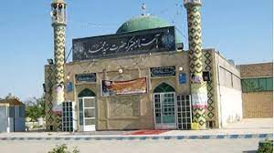

کاشمر یکی از شهرستان های استان خراسان رضوی است که در جنوب غربی مشهد با مساحتی در حدود 2858کیلومتر مربع،واقع شده است
و از شمال به شهرستان نیشابور ،از شمال غربی به شهرستان های سبزوار و بردسکن،از شرق به شهرستان تربت حیدریه از جنوب
و جنوب شرقی به شهرستان مه ولات و از غرب به شهرستان خلیل آباد محدود می شود.
ناهمواری های طبیعی
رشته کوه شمالی:
این رشته کوه از کوه های خواف شروع شده و از شمال تربت حیدریه گذشته و در گردنه محمد میرزا،جاده اصلی مشهد به زاهدان را قطع کرده
و تا قریه ی حصار،آخرین حد تربت حیدریه امتداد داشته،سپس به طرف باختر کشیده شده است. در این رشته کوه،یک سلسله کوه ها و تپه ماهورها که مربوط به دوران سوم زمین شناسی است در حدود<<عطائیه>>و <<شادی>>مشاهده میشود.
و هم چنین در قسمت های بلوک کوهسرخ کوه های مربوط به دوران چهارم زمین شناسی قرار دارد که هنوز قله های مخروطی شکل آن دیده میشود مانند: کوه آتش فشان در شمال ریوش(مرکز بخش کوهسرخ)که نام اصلی آن آتش فشان بوده و بومیان آن را آتشان می خوانند.
کوه های کوهسرخ دارای امتداد غربی شرقی اند و با ارتفاع نسبتا بلند خود بخشی از رطوبت جریان های جوی غرب به شرق را جذب می کنند. لذا کوه های این منطقه پوشیده از درختان بادام میباشد و پایکوه های آن از نظر کشت و کار یکی از مستعد ترین مناطق خراسان رضوی است.
رشته کوه جنوبی: این رشته کوه از کال رودنجی شروع و به کوه یخاب ختم می شود.این رشته کوه که معروف به کوه مغان می باشد از جمله کوه های بسیار قدیمی است که سالیان دراز در زیر آب دریای کم عمق آسیای مرکزی [دریای تتیس] پنهان بوده که پس از چین خوردگی خلیج فارس از زیر آب بیرون آمده و در مقابل نور خورشید قرار گرفته و دارای تپه های گچی است.
مذهب و اعتقادات
مردم کاشمر مسلمان و شیعه اثنی عشری و دارای مذهب جعفری می باشند. اکثریت جمعیت بین 99/9درصد مسلمان می باشند و 0.1 دیگر را پیروان ادیان دیگر تشکیل می دهند که در
حال حاضر اکثر آن ها از این شهرستان به کشور های خارج یا شهر های دیگر کوچ کرده اند.اعتقادات مذهبی و پایبند بودن مردم کاشمر به فرامین دینی
باعث گردیده چهره شهرستان مذهبی باشد.
لذا بارز ترین ویژگی مردم این شهرستان،مذهبی بودن و مودت و دوستی آن ها به اهل بیت عصمت و طهارت میباشد.
وجود حسینیه ها،مساجد ،موقوفات ،مزارات پیران عارف ضمیر،امام زادگان به خصوص این سه امام زاده عزیز:
سید حمزه(ع)
سید مرتضی(ع)
سید محمد(ع)


در گذر تاریخ،این دیار مرکز پرورش علما و مجتهدین زیادی بوده،تا آن جا که کاشمر به عنوان قم ثانی و نجف اصغر یاد نموده اند و به همین جهت بوده است
که کاشمر را دارالمومنین نیز خوانده اند.
 


